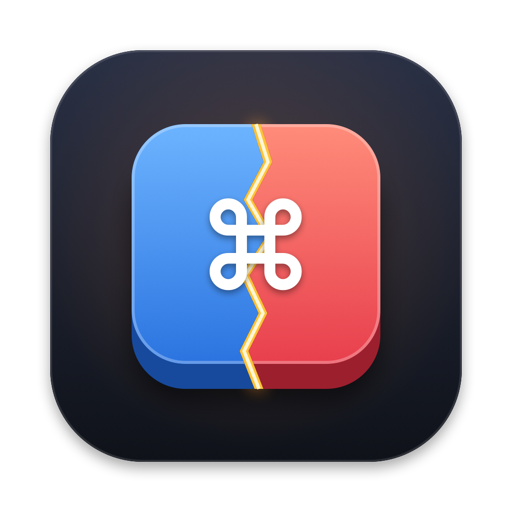

Looks up any key combination
Type or record keys to see each app that uses them, the same key with other modifiers, and free keys nearby.
Keyclash reads macOS, your app menus and tool configs, lists every keyboard shortcut it finds, and marks the ones that clash.
Hold or click the modifier keys. Each key turns free, used, shared, blocked or red for a clash. Click a key to see who owns it.
⌘ + key
Click a key to see its apps
Press Command twice in any app. Type to filter, then press Return to run the shortcut. Hold the second press to see Peek only while you hold.
Type or record keys to see each app that uses them, the same key with other modifiers, and free keys nearby.
One table of every shortcut, sorted by any column, saved as Markdown or CSV in your Downloads folder.
Off until you turn it on. It counts presses with ⌘, ⌃, ⌥ or fn per app and day, and never what you type.
Run keyclash --mcp to connect an agent. It proposes a change as a diff; you approve it, and undo is one call.
Keyclash has no network code. Its scans, counts and backups are plain files in one folder that you can read or delete.
Keyclash is a Rust app built on egui. Clone the repository and one Cargo command opens the window.
Something wrong on your Mac? Open an issue on GitHub.

Yes. The source is on GitHub to fork and change.
To read the menus of open apps and to see the double ⌘ press for Peek. Without it, you still get the shortcuts in files.
No. The counter is off until you turn it on, and it stores only key combinations with a modifier, per app and day.
AeroSpace, OmniWM, skhd, Karabiner-Elements and Wispr Flow, plus macOS settings and app menus.
Version 0.1.0 has no Apple Developer ID yet. Allow it once in System Settings › Privacy & Security.